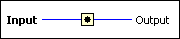

Always Copy Function
Owning Palette: Memory Control VIs and Functions
Requires: Base Development System
Places the value of Input into a new memory location and returns the value in Output. Use this function to control the outcome of the LabVIEW compiler buffer allocation process.
Use this function when you want to control the LabVIEW compiler in order to produce a different result regarding its buffer allocations.

 Add to the block diagram Add to the block diagram |
 Find on the palette Find on the palette |